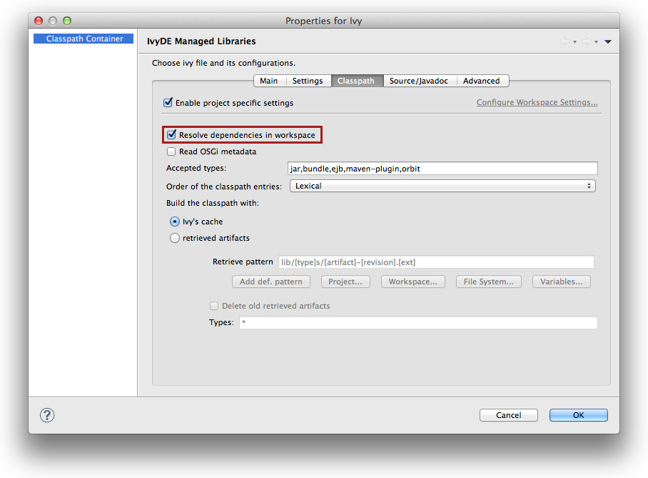

Some projects are composed of mulpliple modules. Often, these modules have dependencies between them, dependencies managed by Apache Ivy (of course!). Eclipse is capable of calculating the workspace's build order according to dependencies between projects. To leverage this advantage, Apache IvyDE has the ability to add a project reference to a dependency located in the workspace in place of downloading its published artifact(s) from the repository. In this way, developers can develop multi-module applications, and test the interaction between these modules, before building and publishing artifacts to the repository. Consider a multi-module application with a considerable amount of code in each of several projects. Many developers have experienced the delays involved in waiting for Eclipse to build code across all of these projects even though development is only being conducted in one isolated part of the application (maybe just one or two projects). If the latest published artifact in the Ivy repository has the same source code as a module that the developer is not currently working on, simply closing that project in the Eclipse workspace and resolving dependencies on dependent projects that would resolve that artifact speeds the compilation process considerably. First, each application module should be separate a project in Eclipse, and each of these projects should have a configured IvyDE classpath container. To enable resolution in the workspace, go to the advanced configuration panel of the classpath container and select <b>Resolve dependencies in workspace</b>. <center></center> <u>Important notes:</u> to make the resolve in workspace work correctly the <i>info</i> in the ivy.xml should be properly set: <ul> <li>The <i>org</i> and <i>name</i> </li> <li>If there is a <i>rev</i> specified, dependencies should specify the appropriate range</li> <li>If there is no <i>rev</i> specified, only dependencies with <i>lastest</i> will match</li> <li>The <i>status</i> should match the required one: a dependency with <i>latest.integration</i> will only match if there is <i>status="interation"</i> in the info of the dependant module</li> </ul> Having two projects "A" and "B" configured to use IvyDE and the workspace resolver, here is the expected resolved dependencies: <table class="ant"> <tr><th>A dependency on B</th><th>B declared revision</th><th>result</th></tr> <tr><td>latest.integration</td><td>1.2</td><td>B wired on A</td></tr> <tr><td>1.2</td><td>1.2</td><td>B wired on A</td></tr> <tr><td>[1.2,1.3)</td><td>1.2</td><td>B wired on A</td></tr> <tr><td>1.0</td><td>1.2</td><td>no project wiring</td></tr> <tr><td>latest.integration</td><td><i>none</i></td><td>B wired on A</td></tr> <tr><td>1.2</td><td><i>none</i></td><td>B wired on A</td></tr> <tr><td>[1.2,1.3)</td><td><i>none</i></td><td>B wired on A</td></tr> <tr><td>latest.integration</td><td>$version</td><td>no project wiring</td></tr> <tr><td>1.2</td><td>$version</td><td>no project wiring</td></tr> <tr><td>[1.2,1.3)</td><td>$version</td><td>no project wiring</td></tr> </table> In some setup, if you want to mix some resolver of your own and the workspace resolver, and still want the transitive dependencies work nicely between them, you may want to turn the resolve mode to <a href="http://ant.apache.org/ivy/history/latest-milestone/use/resolve.html">dynamic</a>: <ul> <li>see the defaultResolveMode attribute of <a href="http://ant.apache.org/ivy/history/latest-milestone/settings/settings.html">settings</a> in the ivysettings.</li> <li>see the resolveMode attribute of <a href="http://ant.apache.org/ivy/history/latest-milestone/settings/module.html">module</a> in the ivysettings.</li> </ul>